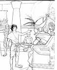
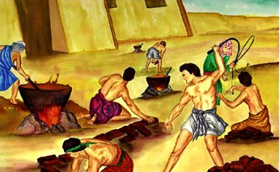

Am Anfang...

Adam und Eva
Der Name des ersten Buches der Bibel, Genesis, bedeutet Anfang. Die ersten beiden Kapitel des Genesis sagen uns, daß Gott das Universum erschaffen hat: die Sterne, die Erde und alle anderen Planeten, und jedes Lebewesen, das ist oder jemals war. Gottes besondere Schöpfung war der Mensch. Die Leute sind etwas Besonderes, weil sie im Bilde Gottes geschaffen sind. (Siehe Genesis 1:26-27)

Das dritte Kapitel des Genesis erzählt die Geschichte, wie die Sünde in die Welt eingetreten ist. Adam und Eva, der erste Mann und die erste Frau, waren versucht zu glauben, daß Gott sie angelogen hat. Als sie an die Lüge glaubten, waren sie dann überzeugt, daß sie tatsächlich wie Gott sein könnten. Als Gott sah, daß sie ungehorsam waren, Adam und Eva genossen nicht mehr die offene Beziehung zu Gott, die sie zuvor hatten; Sünde hat sie von Gott getrennt. Und so hat es für jede Person gewesen, außer Einem, die jemals seitdem gelebt hat: Wir sind alle durch die Sünde von Gott getrennt.

Die Kapitel 4 und 5 des Genesis fortsetzen die traurige Geschichte der zunehmenden Bosheit der Menschheit. Gott hatte uns noch nicht seine Gebote für das rechte Leben gegeben, und Menschen verhielten sich genauso, wie es ihnen gefiel. Die ganze Zivilisation schien auf Gewalt und Unmoral aller Art zu verzichten. Als Gott den traurigen Zustand Seiner höchsten Erschöpfung sah, bedauerte Er, daß Er ein solches Verhalten fähig gemacht hatte.

Noach
Als Gott auf seine sündige Schöpfung herab sah, Er fand einen Mann, der mit dem Herrn ging: Noach. Gott beschloss, die Menschheit auszulöschen und mit Noach und seiner Familie neu zu beginnen. Die Kapitel 6 bis 8 der Genesis erzählen, wie Gott die ganze Menschheit mit einer Flut zerstörte hat, die nur Noach und seine Frau und seine drei Söhne und ihre Frauen rettete.
Die Kapitel 9 bis 11 der Genesis geben uns die Geschichte, wie die Erde nach der Sintflut von Noachs Söhnen, Sem, Ham und Jafet, wieder besiedelt wurde. Am Ende des Kapitels elf, wir werden zu einem ganz besonderen Mann eingeführt, ein Mann, den Gott nennen würde, der Vater eines Volkes zu sein, das er Seinen eigenen Namen nennen würde.

Abraham
In Genesis sagt uns die Bibel von einer Anzahl von Leuten, die mit Gott gingen,
wie Noach. Das Gehen mit Gott erfordert Glauben: eine unbestrittene überzeugung, daß Gott tun wird, was Er zu tun verspricht. Es gab große überzeugung für Noach zu glauben, daß Gott die gesamte Bevölkerung der Erde mit einer Flut zerstören würde und um Gottes Anweisung zu folgen, um eine Arche (ein großes Boot) zu errichten, wann Leute verspotteten ihn während er arbeitete.
Im Genesis zwölf, wir lernen von einem anderen Menschen, von dem Gott großen Glauben fragte: Abraham.
Gott fragte viel von Abram (Gott änderte später seinen Namen zu Abraham): Er fragte Abraham, seine Heimat zu verlassen und an einen Ort zu ziehen, den er noch nie gesehen hatte, an dem er niemanden kannte. Für seinen Gehorsam hat Gott Abraham zwei Versprechungen gemacht:
- Er würde Abraham und seinen Nachkommen das Land Kanaan (was wir jetzt Israel nennen) geben
- eine große Nation würde aus Abrahams Nachkommen kommen
Nach Ansicht von Abraham, beide Versprechungen hätten Probleme mit ihnen haben müssen. Das Land Kanaan gehörte bereits zu mehreren anderen Gruppen von Menschen, und Abraham und seine Frau hatten keine Kinder. Und Abrahams Frau, Sarai, war viel zu alt, um Kinder zu haben. Dennoch, Abraham hatte Glauben, und so zogen er und sein ganzer Haushalt nach Kanaan.
Wenn Sie die Geschichte von Abraham in den Kapiteln 12-23 der Genesis lesen, Sie werden sehen, daß Abrahams Glaube nicht perfekt war: er manchmal nahm Angelegenheiten in seine eigenen Hände
anstatt auf Gott und Sein Timing zu warten. Dennoch, wir lesen in Genesis 15:6, Abram glaubte dem Herrn, und Er galt ihm als Gerechtigkeit.
Auch wenn es nicht einfach ist, Auch wenn WIR den Weg nicht sehen können, Gott bittet uns, an Ihn zu glauben.

So wie Gott es versprochen hatte, hatte Sarah einen Sohn! Sie und Abraham nannten ihn Isaak. Sarah freute sich, auch im hohen Alter ein Kind zu bekommen.
Als Isaak aufwuchs und heiratete, hatte er zwei Söhne, Jakob und Esau (Genesis 25:19-Genesis 30).
Jakob hatte zwölf Söhne (Sie können eine Liste ihrer Namen in Genesis 35:23-26 sehen). Die Namen dieser Söhne, die Namen der zwölf Stämme Israels würden werden. (Gott änderte wirklich Jakobs Namen zu Israel - Genesis 35:10.) Durch diese zwölf Söhne, Gott erfüllte Sein Versprechen an Abraham, eine große Nation von Menschen durch ihn zu machen.
Mose
Einer von Jakobs Söhnen, Josef, ging nach Ägypten und wurde ein großer Offizier im Hofe des Pharao (Sie können darüber in Genesis lesen 37-50; es ist eine lange Geschichte, aber ein echtes Abenteuer). Schließlich zogen alle elf Brüder Josefs nach Ägypten ebenfalls. Solange Joseph lebte, lebte seine Familie gut durch seine Beziehung zum Pharao.
Nach Josefs Tod, andere Generationen wurden geboren, und ein neuer Pharao kam an die Macht, der nicht wusste, daß Josef von der königlichen Familie begünstigt worden war. Dieser neue Pharao sah, daß die Juden (die Israeliten wurden auch als Juden oder das jüdische Volk bekannt) hatte stark zugenommen. Es machte ihm Angst, daß sie seine Regierung überwältigen könnten, so machte er alle Israeliten (Juden) Sklaven in Ägypten.
In Exodus 2:23, die Bibel sagt uns, daß die Israeliten sehr gelitten haben, als Ägyptens Sklaven. Sie schrien zu Gott, um sie zu retten, und Gott hörte sie. Er entschied sich, für einen Mann aus der Mitte der Juden, um Israel von der Sklaverei zu befreien. Dieser Mann hieß Mose.
Im Gegensatz zu Abraham, die Gottes Rufe befolgten, Mose versuchte zuerst, den Herrn dazu zu bringen, jemand anderen zu gebrauchen (Exodus 4:1-14). Gott zeigte Mose, daß es Gott sein würde, nicht Mose, der tatsächlich die Hand des Pharao erzwingen würde, um die jüdischen Sklaven zu befreien. Mose wäre nur Gottes Botschafter sein.
In Ägypten verehrten sie viele Götter - Idole - nicht der Gott Abrahams, Isaaks und Jakobs. Als Mose sich dem Pharao näherte (Exodus 5), Pharao spottete: Wer ist der Herr, dem ich gehorche?
Mose kehrte zum Pharao mit einer zweiten Bitte, daß Pharao die jüdischen Sklaven freigebe. Diesmal aber fährte Mose mit ihm eine Warnung von Gott: Wenn Pharao nicht zustimmte, die Israeliten zu befreien, Gott würde eine Reihe von zehn Plagen auf Ägypten entfesseln, Plagen der Zerstörung, Krankheit und Dunkelheit. Erstaunlich auch nach den schrecklichen Wirkungen all dieser Plagen, der Pharao weigerte sich immer noch, an die Macht Gottes zu glauben, und würde die Juden nicht befreien. (Exodus 7:15-Exodus 11)
Es war erst nach der zehnten Pest (Exodus 12), daß Pharao stimmte schließlich zu, Ägyptens Sklaven zu befreien. Der Erstgeborene eines jeden Ägyptischen Haushaltes würde getötet. Jedoch, Gott würde die Erstgeborenen der Juden retten. Er befahl ihnen, ein Lamm zu opfern, und ihr Blut über die Türen ihres Hauses zu malen. Als der Engel des Todes kam, um die erstgeborenen Söhne zu töten, würde der Engel die Häuser aller Israeliten überschreiten,
die seinen Anweisungen gefolgt hatten, das Blut des Lammes über ihre Türen zu malen.
Zu diesem Tag, Juden feiern das Passahfest jedes Jahr, um das Wunder zu erinnern, daß sie von der Sklaverei befreit wurden.
Unter der Führung von Mose, die Juden fingen ihre Reise aus Ägypten an. Nach dem allen, was Ägypten unter der Hand Gottes geschehen war, Pharao versuchte ein letztes Mal, die Juden in Knechtschaft zu halten.

Die Ägyptische Armee jagte die Israeliten zum Roten Meer und dachte, sie hätten sie am Wasser gefangen (Exodus 14). Die Israeliten begannen in Panik zu geraten, aber Mose forderte sie auf, Glauben an ihren Gott zu haben. Gott befahl Mose, seinen Spazierstock durch das Wasser zu heben. Auf wunderbare Weise, das Wasser des Roten Meeres trennte sich, einen Weg des trockenen Landes zu schaffen, daß ihnen erlaubte, zur anderen Seite zu gehen. Als die Armee des Pharao versuchte, über denselben Weg zu gehen, das Wasser des Meeres fiel von beiden Seiten herab, und alle sind ertrunken. Letztendlich, die Israeliten waren aus Ägypten und frei von der Sklaverei.
Und, wie Gott es Mose gesagt hatte, als Er ihn zuerst anrief, es war die mächtige Hand Gottes, die alles bewerkstelligte!
Die Zehn Gebote
Wie wir in der Geschichte der Großen Flut gelesen haben, Gott hatte seine Gesetze noch nicht den Menschen gegeben. Als die Juden ihren Weg in das Land machten, daß Gott Abraham und seinen Nachkommen versprochen hatte, Gott beauftragte Mose, auf die Spitze des Berges Sinai zu klettern.
Dort, mit dem Berg mit Rauch bedeckt, um das Volk von Gottes überwältigender Herrlichkeit zu schützen, Mose empfing Gottes Gebote für sein Volk. (Exodus 20:1-17)
Nur weil die Juden nicht mehr in Ägypten gebunden waren, es bedeutete nicht, daß alle ihre Schwierigkeiten vorbei waren. Die Geschichte von ihrer Reise in das Land Gott hatte ihnen versprochen, sie deckt eine Periode von vierzig Jahren!

Der Glaube der Israeliten war schwach; sie bezweifelten oft, daß Gott für sie sorgen würde. Sie wurden manchmal entmutigt, sie sprachen tatsächlich über eine Rückkehr nach Ägypten! Und, vielleicht das Schlimmste, Sie schufen sogar Götzen, um anzubeten, weil sie Gott so sehr zweifelten.
Die Geschichte des Todes von Moses ist im 34. Kapitel des Deuteronomiums aufgezeichnet. Es ist in dem Buch des Deuteronomiums, dass Gott auf die Gesetze, die er sein Volk auf dem Berg Sinai gegeben hatte, erweitert. Er skizziert, wie sich die Menschen unter ihren Juden verhalten sollten und wie sie Gott anbeten sollten.